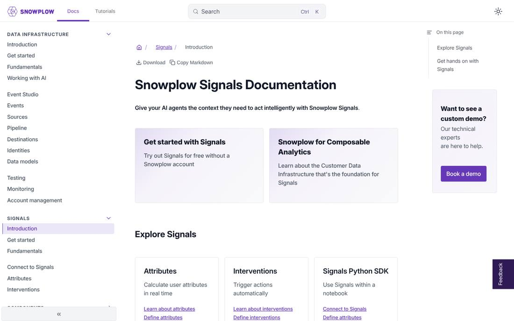
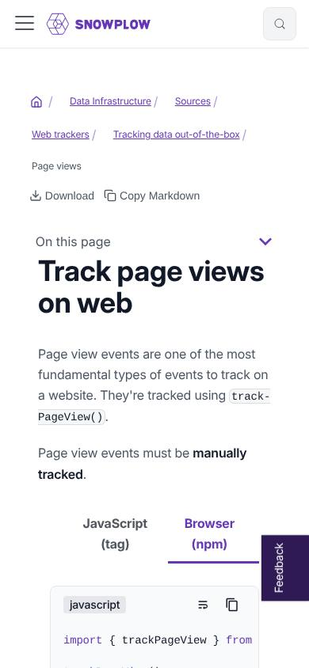

docs.snowplow.io · research · 5 Nov 2026
A structure and design blueprint for the Snowplow docs
I looked at what the research on developer documentation recommends, how the AI labs, the best developer-tool companies and our direct competitors build their docs, and how our site is put together. This page covers how to structure the docs for CDI and Signals, and what a cleaner, more modern design would look like in our Docusaurus setup.
01Summary
The verdict
Our writing system is better than most vendors' sites. The style guide, its LLM twin, the CLAUDE.md rules, the Fundamentals hub, and the llms.txt plugin with a .md copy of every page put us ahead of most of the companies I looked at. The weak points are navigation and the visual layer. Signals sits below roughly 20 CDI items in one shared sidebar. Sections are named after internal components ("Pipeline", "Components"). The CSS is 1,791 lines with 189 !important rules, and four separate color palettes and three styling systems compete with each other. None of this needs a platform migration. Docusaurus 3.10 can do everything below.
The recommendations, in rough priority order:
- Split navigation by product.A CDI | Signals switcher in the navbar, each scoping its own sidebar. Claude, OpenAI, Mistral, Stripe, Vercel and Confluent all do some version of this. URLs stay the same.
- Name sidebar groups after what the reader is doing.CDI: Design tracking, Collect events, Validate and enrich, Load and forward, Model and unify, Monitor and operate. Signals: Connect, Define attributes, Serve attributes, Intervene. This follows RudderStack and Tecton, and the information-scent research.
- Give the home page two equal product cards and a lifecycle map.Each card links to its quickstart, its reference and one product-specific page, the same pattern as the Claude docs home. Add quickstarts with time estimates (Mistral) and a block for setting up coding agents (Vercel, Cloudflare).
- Move reference and legacy content out of the task path.Put a separate Reference area beside the guides, as all five AI labs do, and send the 277
previous-versions/pages to Reference › Legacy. - Standardize page anatomy by content type.Add
content_typefrontmatter and fixed templates for concept, how-to, tutorial, reference, integration and tracker pages. Split mixed pages one at a time rather than creating empty Diátaxis folders. - Rebuild the CSS on one token set.Restrained neutrals, one purple accent, a 672px reading column, and a designed dark mode. The aim is to drop from 189 to 10 or fewer
!importantrules and from about 1,800 to about 450 lines of CSS. - Consolidate components.One Card, Button, Badge, Callout, Code group, Steps and Parameter table each. Retire FontAwesome, framer-motion, the animated demo banner under the table of contents, and MUI outside the few widgets that need it.
- Point agents at the docs.Put agent instructions at the top of
llms.txt, add per-product indexes, a hosted docs MCP server, "Open in Claude/ChatGPT" page actions and a copy-pasteAGENTS.mdsnippet. Agents only fetchllms.txtwhen told to (Ahrefs: 97% of these files get zero requests).
02What the evidence says
There are good studies on developer documentation, and they mostly agree. These are the principles with the strongest support, in order of how much they should shape our decisions.
| Principle | Evidence | What it means for us |
|---|---|---|
| Accuracy and completeness come before presentation | Uddin and Robillard (IEEE Software 2015) found ambiguity, incompleteness and incorrectness were the most severe problems, and six problem types made developers abandon an API. Write the Docs: incorrect docs are worse than missing docs. | Fix the duplicates and contradictions before the redesign. Querying is covered 3 times, cross-domain tracking 3 times, and two pages share the title "User and session identifiers". |
| Developers start from code examples | Meng et al. (2019) watched developers go straight to examples. In a 2020 follow-up, clean copy-pasteable examples reduced errors. | Every how-to needs a complete, working snippet near the top, with its parts explained. |
| Organize by task, not by internals | Robillard and DeLine (2011), Meng Guideline 1.1, Carroll's minimalism research (replicated by Lazonder and van der Meij, 1993: minimal manuals produced faster and better learning). | "Pipeline" and "Components" are internal names. Readers think "collect events", "load data", "fix failed events". |
| Put concepts where the task needs them | About half of the developers observed barely opened the Concepts page (Meng 2019). Write the Docs accepts some repetition (ARID). | Keep Fundamentals as the canonical explanation, but allow a one-sentence inline definition before the link. This needs a CLAUDE.md change (see Open decisions). |
| Every page is page one | Mark Baker (2013): readers arrive at pages, not sites. Retrieval tools like kapa.ai now say the same about LLM chunking. | Each page states its context and prerequisites. No "as described above". |
| Keep content types separate, and separate them gradually | Diátaxis: mixed types weaken each other. Its author warns against setting up four empty sections first. Hillel Wayne adds a "conceptual overview" type, which a platform product like ours needs. | The collector, Signals connection and web tracker pages mix how-to and reference. Tag pages first, then split them one by one. |
| Write for scanning, with labels that say what's there | NN/g eye-tracking studies, Pirolli and Card's information foraging theory (1999), Google's headings guidance. | Front-load headings and nav labels with the words people search for. |
| Fewer, more complete pages | Uddin and Robillard name "10s of clicks" as a problem. Meng Guideline 1.3: keep information on one page when search is weak. | Failed events are spread over 4 places, and manual recovery alone has 15 pages. |
| Never hide required content in tabs or diagrams | NN/g: non-default tabs should only hold supplementary content. kapa.ai: give diagrams a text version. | Keep the platform tabs CLAUDE.md requires, but put prerequisites and warnings outside them. |
| Agents read docs now, but only when pointed at them | GitBook: AI readers rose from about 9% to about 41% of traffic on its platform during 2025 (vendor data). Ahrefs (May 2026): 97% of llms.txt files got zero requests. Vercel's evals: a docs index kept in the agent's context reached a 100% pass rate, against 53–79% without one. | Ship the files, then tell agents about them: a snippet for AGENTS.md, an MCP server, and a short pointer on each page. |
The Google log study (new users who visited guide pages had 3.92 times the odds of a successful first API call) and GitBook's traffic numbers show correlation, and come from vendor-run platforms. Use them as direction, not as proof.
03How the leaders do it
I looked at four groups of sites: AI labs, best-in-class developer tools, data infrastructure peers, and feature-store products that resemble Signals.
AI labs: Anthropic, OpenAI, Google Gemini, Mistral, Cohere
| Pattern | Who does it | Take for Snowplow? |
|---|---|---|
| Top navigation split by product | Claude (Messages / Managed Agents / Admin), OpenAI (API / ChatGPT / Codex), Mistral. Cohere splits by doc type instead, which suits a single-API company. | Yes. Our products have different readers. |
| Guides and API reference in separate trees | All five | Yes |
| Code on the home page | Claude (9 language tabs), Gemini (6) | Yes, a 3-line snippet per product card |
| Home page as a lifecycle map | Claude: Get started → Build → Evaluate and ship → Operate, one tab per product | Yes |
| Language switcher that persists across the site | OpenAI (7), Claude (9), Cohere (8) | We already have it via groupId |
llms.txt plus a .md copy of every page | All five. Claude, OpenAI, Gemini and Cohere add a pointer on every page. | We have both. Add the pointer. |
| Docs MCP server | Claude, OpenAI, Cohere, Gemini | Yes |
| Ask AI in search | Claude (Inkeep), Claude Code (Mintlify), OpenAI, Cohere (Fern) | Yes, via DocSearch v4 |
| Legacy content in a labeled section, not versioned docs | OpenAI "Legacy APIs", Mistral /resources/deprecated/. Only Cohere versions the whole site. | Yes. Version components, not the site. |
| Theme toggle with System option, dark mode designed into the tokens | All five | Yes |
Build vs buy is split. Claude Platform, OpenAI (Starlight), Mistral and Gemini are custom builds. Claude Code uses Mintlify and Cohere uses Fern. Anthropic's two sites have the same feature set, so a framework doesn't decide quality.
Developer tools: Stripe, Vercel, Supabase, Cloudflare, Twilio, PostHog, and docs platforms
These sites look current for the same handful of reasons. The platforms that set the visual trend (Mintlify, Fern, Starlight, Fumadocs, Nextra) all follow the same conventions:
- Quiet chrome. Neutral surfaces, one accent used for links, the active item and focus, hairline borders instead of shadows, radii of 6–8px.
- A narrow reading column inside a wide shell. Vercel's article column is 640px, Clerk's 696px, Starlight's 720px. Ours is 736px, about 90 characters per line.
- A neutral sans with a distinct mono. Cloudflare and Fumadocs use JetBrains Mono, Vercel uses Geist Mono. Brand typefaces are common among the AI labs.
- A page header with actions. Breadcrumbs plus "Copy page" with a menu (View as Markdown, Open in Claude, Open in ChatGPT). Mintlify made this a standard feature.
- A page footer with feedback. "Was this helpful?", last updated, previous and next.
- A shared component set. Cards, Steps, callouts, code groups with language tabs, parameter fields, badges for availability and status.
- A sidebar filter and a scoped sidebar. Cloudflare's "Filter navigation", Vercel's "Back to all sections".
Our market: Segment, RudderStack, mParticle, Amplitude, PostHog, dbt, Snowflake, Confluent, Fivetran, Hightouch
| Problem we share with them | Best pattern seen |
|---|---|
| Several products, one site | Confluent's product tabs (Cloud, Platform, Connectors, Clients). RudderStack's verb-named groups: Collect, Unify, Activate, Govern, Monitor. |
| A shared concepts layer | Segment's Spec, which collection and destinations both link to. This is our Fundamentals. |
| Hundreds of integrations | A hub with a full compatibility matrix (Segment), query-string filters you can link to (mParticle), and the same H2s in the same order on every integration page (Fivetran, Hightouch). Settings tables generated from config schemas, matching the product UI. |
| Many SDKs in many languages | PostHog's feature-support matrix on the SDK hub. Segment and Amplitude label each SDK with a support tier. |
| Managed vs self-hosted | Inline markers per page (Confluent's tags), not separate doc sets |
| Versioned components | dbt's "Applies to" markers and per-component release notes (Fivetran) |
Products like Signals: Feast, Tecton, Hopsworks, Featureform
- Tecton groups its sidebar by workflow verbs and teaches every concept with one running example.
- Feast explains push vs pull serving on its own architecture page, and labels each integration as core or community.
- Hopsworks routes readers by persona on its landing page, including an "Evaluator" path, and has
llms.txt,.mdpages and "Copy for LLM" throughout.
Signals maps cleanly onto this: one running example (say, a cart-abandonment score), a push vs pull page (interventions vs services), and a router for "personalize an app" vs "feed an AI agent".
04Where our docs are today
An agent built the site locally and took screenshots in both themes at 1440px and 390px. These two show the main problems.


Keep and build on
- The style guide, its LLM twin, and the CLAUDE.md rules
- The Fundamentals hub and "link, don't re-explain"
- Build checks that fail on broken links and anchors
descriptionandkeywordson 100% of pages- The
llms.txtplugin:llms-full.txt, a.mdcopy of every page, version-aware exclusions - Copy Markdown and Download on every page
- Persisted platform tabs (
groupId,queryString) AvailabilityBadges,EventForwardingSchemaTable- Signals' four-part structure: concepts, connection, attributes, interventions
- Inter Variable as the body font
Fix
- CDI and Signals share one sidebar; the CDI section has 13 siblings
- The CDI get-started path ends on a comparison table with no next step
- The Signals quickstart lives in
/tutorials, outside the Signals sidebar - No
content_typemetadata; how-to and reference mixed on key pages - Sidebar depth reaches 7–9 levels in
previous-versions/ - Four color palettes: shadcn tokens, Infima, MUI, hard-coded hex
- Dark mode mixes three greys and black; body text is dimmed to
#999 - Stock Infima admonitions, the most dated element on the site
- Sidebar carets hidden until hover; navbar tabs are buttons, not links
- CSS targets generated class names that change on upgrade
The technical debt matters because it blocks a redesign. tailwind.config.js sets important: true, so every utility is !important. MUI's provider wraps the whole app even though most pages only use it for Grid and Paper. FontAwesome registers every icon globally. About 32 files are swizzled; src/theme/DocPage/* is a dead Docusaurus v2 swizzle, and SearchBar is an unchanged copy of upstream. Small edits to custom.css won't work here; the file needs a rewrite.
05Proposed structure
Top-level layout
Keep one docs plugin so /docs/... URLs and the /index.md link rule stay intact. Replace the single sidebar with four: cdi, signals, reference and platform. A product switcher in the navbar picks between CDI and Signals; Reference, Tutorials and Platform & AI are plain tabs.
Navbar [Snowplow CDI ▾ | Signals] Reference Tutorials Platform & AI Release notes ↗ [Search · Ask AI] [◐] CDI sidebar 7 groups, named for what the reader does ├─ Get started overview · choose deployment · set up Console · first event · query · model · try with Micro ├─ Design tracking tracking plans · data structures · Snowtype · Event Studio ├─ Collect events trackers hub + feature matrix · web · mobile · server · built-in events and entities ├─ Validate and enrich collector · enrichments · failed events · testing (Micro, Inspector) ├─ Load and forward warehouses and lakes · streams · event forwarding catalog · reverse ETL ├─ Model and unify dbt packages · Identities └─ Monitor and operate monitoring · alerts · recovery · self-hosted operations Signals sidebar ├─ Get started overview + persona router · quickstart · Sandbox ├─ Concepts one running example · push vs pull · architecture ├─ Connect Console · credentials · Python / TypeScript SDK install ├─ Define attributes attribute keys · attribute groups · stream vs batch ├─ Serve attributes services · retrieve in apps · serve to AI agents ├─ Intervene define · subscribe · examples └─ Publish and operate publish lifecycle · Inspector · monitoring Reference sidebar lookup only ├─ APIs · SDK reference · Component configuration · Schemas and data ├─ Versions and compatibility └─ Legacy all previous-versions/ trees, collapsed Platform & AI sidebar shared by both products ├─ Fundamentals · Working with AI · Account management └─ Security and policies · Migration guides · Glossary
In Docusaurus, each page shows the sidebar it belongs to. A Signals reader who follows a link to /docs/fundamentals/entities/ lands in the Platform & AI sidebar. Either design for that (a "Back to Signals" link at the top of shared pages) or list Fundamentals in both product sidebars and accept that the first listing wins. I'd do the first.
Page templates by content type
Add content_type: concept | how-to | tutorial | reference | integration | sdk | landing to the required frontmatter. Each template below stays within the CLAUDE.md limit of 3–5 H2s. "Next steps" becomes a footer component rather than an H2.
| Type | H2 sections, in order | Modeled on |
|---|---|---|
| Concept | What it is and why it matters · How it works (diagram plus a text version) · Example · Related concepts | Diátaxis explanation, Tecton |
| How-to | Before you begin · Steps (verify as the last step) · Troubleshooting (exact error string → fix) | Good Docs Project, Google procedures, Claude Code |
| Tutorial | What you'll build (with "≈ N min") · Requirements · Steps · Clean up | Minimalism, Mistral |
| Reference | Parameters (generated table) · Example · Errors · Version applicability | Claude and OpenAI API reference, Cohere |
| Integration | Compatibility · Connect · Configure (generated by EventForwardingSchemaTable) · Troubleshooting | Fivetran, Hightouch, Segment |
| Tracker SDK | Feature support (row from the hub matrix) · Install and initialize · Track your first event · Next steps | Segment, PostHog |
The how-to template keeps the existing CLAUDE.md feature-page shape (description → when/why → example → configuration): the opening paragraph covers description and when/why before the first H2.
Getting-started paths by reader
| Reader | Path | Today | Target |
|---|---|---|---|
| Data engineer, deploying CDI | Home → CDI Quickstart → choose deployment → set up Console → first event → query | 4–5 pages, dead end at the comparison table | 3 clicks to setup |
| Tracking implementer, front-end or mobile | Home → Collect events → tracker hub → tracker landing → first event | Deep in a 508-file sources/ tree | 3 clicks |
| Analytics engineer | Home → Model → dbt packages hub with a compatibility table → install | Inside the 112-file modeling-your-data | 2 clicks |
| App or ML engineer, using Signals | Home → Signals Quickstart, inside the Signals sidebar | ~5 pages, jumps to /tutorials or the external Sandbox | 2 clicks |
| Evaluator | Home → product landing → architecture overview → "Try with Micro" or Sandbox | No dedicated path | 2 clicks |
| Coding agent | Human pastes the snippet → agent reads /llms.txt → fetches .md pages or queries the MCP server | Nothing points agents at llms.txt | 0 human clicks |
Catalogs, trackers and versions
- Destinations catalog hub. One matrix of destination × type (forwarder, loader, Snowbridge target, reverse ETL) × delivery × cloud × status. Filters go in the query string so every view can be linked. Build them as a static component over a JSON manifest so the
.mdexport still lists every row. - Tracker feature matrix. Generate it from a YAML manifest: page or screen views, activity tracking, built-in entities, anonymous tracking, media, e-commerce, Snowtype, consent. The same manifest feeds the agent rules in
llms.txt. - Support tiers. Flagship, Maintained or Community on every tracker and integration. Today "deprecated" is the only status label.
- Versions. Don't adopt Docusaurus whole-site versioning. Use inline "Applies to Enrich 5.x+" markers generated from the version manifest so they can't drift, plus a Versions and compatibility page.
06Proposed design
The direction is quiet chrome, a narrow reading column and one accent. Purple appears only on links, the active nav item, focus rings and the primary button. The mock below uses the proposed tokens; toggle it to see the dark version.
Send a page view event each time a page loads or the route changes.
Illustration only. The real layout is 1440px wide: a 272px sidebar, a 672px reading column (code and tables can widen to 896px) and a 224px table of contents.
Tokens
One file, src/design/tokens.js, becomes the source for tokens.css, the Tailwind theme, the Prism themes and (while it remains) the MUI theme. Primary purple is defined once instead of five times.
#ffffff · #0f0f11#fafafa · #141417#e4e4e7 · #27272a#18181b · #f4f4f5#52525b · #a1a1aa#6638b8 · #a98bf0#f5f1fc · #1d1830Top half light, bottom half dark. Every text pair is at least 4.6:1 (WCAG AA). The orange #fc5e35 CTA accent is retired: two accents compete.
| Token | Value | Change from today |
|---|---|---|
| Body | Inter Variable 16px / 28px, woff2, subset | From .ttf at 26.4px line height. Drop the global negative letter-spacing. |
| Mono | JetBrains Mono 400/600 (or Geist Mono) | From the default system stack |
| H1 / H2 / H3 | 36 / 24 / 18px, weight 600, tighter tracking | H2 drops from 700, H3 from 20px |
| Reading column | 672px; code, tables and diagrams up to 896px | From 736px |
| Sidebar / TOC | 272px / 224px | From 330px, defined three ways |
| Radii | 4 / 6 / 8 / 12px | Fixes the Tailwind map that turns lg into 4px |
| Shadows | None by default; one for hover, one for popovers | Remove framer-motion glow on the demo banner |
| Callouts | 1px border on all sides, tinted background, icon and title in the semantic color, body in normal text color | From stock Infima: saturated fills, thick left border, uppercase labels |
| Dark mode | Surfaces step lighter for elevation; same accent hue as light; body text at full --fg | From three greys plus black, and dimmed #999 text |
Components
| Standardize on | Replaces |
|---|---|
<Card> with link, product, quickstart and compact variants; titles are real headings | CardGrid.tsx's three variants, ui/card.tsx, .cta-card, .link-card, the DocCard styling |
<Button>: primary, secondary, ghost, link | .snowplow-button, .cta-button, .featured-section-button |
<Badge> for availability, lifecycle, tier and version | Badges.js (shields.io images) and availability-badges.tsx |
<CodeGroup>: language tabs inside the code header, persisted | Indented .tabs-container that misaligns code with text |
<Steps>: numbered rail, each step an anchorable H3 | Hand-written numbered H3s |
<ParamTable>: name, type, required, default, since | Static uses of MarkdownTableAsMui (MUI data grid premium) |
<FeatureMatrix> for tracker and destination hubs | Hand-written Markdown tables |
<PageActions>: Copy page plus View as Markdown, Open in Claude, Open in ChatGPT, Copy MCP URL | The Download and Copy Markdown row |
<Feedback>: "Was this page helpful?" as a Snowplow event, gated by cookie consent | The Product Fruits side tab on doc pages |
| lucide icons | FontAwesome (all sets registered globally) and @mui/icons-material |
Home page
Give docs/introduction.md a layout: home frontmatter flag so the existing DocItem/Layout swizzle drops breadcrumbs, page actions and the table of contents. Then, top to bottom:
- Search-first hero, with a panel for connecting a coding agent (Claude Code, Cursor, Codex tabs).
- Two equal product cards with a 3-line snippet each. CDI links to Quickstart, Tracker reference, Trackers and SDKs. Signals links to Quickstart, Signals API and SDK reference, Define attributes.
- A lifecycle strip with one tab per product: Design → Collect → Validate → Load → Model, and Define → Serve → Intervene.
- Quickstarts with time estimates, filterable by product through
?filter=. - An "I want to…" table that maps about 8 common tasks to their pages.
- The three latest releases.
Implementation notes
- Cascade layers are already on.
future: { v4: true }enablesuseCssCascadeLayers, so Infima is already layered. The!importantrules come from Tailwind'simportant: true, selectors on hashed class names, and theprosewrapper fighting Infima. Removeprosefrom the doc body and style.markdownfrom tokens. - Scope Tailwind carefully.
important: '#__docusaurus'breaks anything rendered in a portal (Radix popovers, the DocSearch modal, toasts). Test those, or go straight toimportant: falseonce the prose fight is gone. - The three-way theme toggle is free. Docusaurus 3.10's stock
ColorModeTogglehas a System state. Delete our MUI-sync swizzle and setrespectPrefersColorScheme: true. - Split CSS by job. Tokens, Infima variable mapping, prose, and chrome, with stylelint in CI: an
!importantbudget of 10 and a ban on[class*=…],_xxxxhash and.css-…selectors. - Isolate MUI. Move the provider out of
Root.jsinto a lazy-loaded wrapper aroundJsonSchemaValidator,DbtSchemaSelectorand the data grids. - Accessibility. axe in CI on 20 URLs × 2 themes × 2 widths, underlined prose links, 24px minimum targets (WCAG 2.2), and a cookie banner that doesn't cover focused content.
07Docs for AI agents
We already ship the baseline that all five AI labs ship. The gap is getting agents to use it. In order:
- Agent instructions at the top of
/llms.txt. Current tracker majors and Signals SDK packages, what's deprecated, "use self-describing events and entities, never 'unstructured event' or 'context'", and "check registries for current versions". Stripe and Gemini do this. - Per-product indexes:
/docs/signals/llms.txt, a CDI index and a Reference index, with a router at the root (OpenAI, Cohere). Tracker pages currently dominatellms-full.txt. - A pointer on every page plus a
rel="alternate" type="text/markdown"link. - A copy-paste
AGENTS.mdsnippet on the home page and the Working with AI page. - Page actions: Open in Claude, Open in ChatGPT, View as Markdown.
- A hosted docs MCP server with
search_docsandget_page, separate from the existing Snowplow MCP server. This needs hosting outside Netlify. - Ask AI in search via DocSearch v4, which Docusaurus 3.9+ supports. Needs an Algolia AskAI assistant; check the plan cost first.
- Writing rules for retrieval in the LLM style guide: no "above"/"below", exact error strings next to fixes, diagrams restated as steps.
08Roadmap
The two synthesis agents produced conflicting timelines (13–16 engineering weeks vs several quarters), because one counted front-end work and the other counted editorial work. They run in parallel. The front-end track is measured in weeks; the editorial track (re-sorting pages, merging duplicates, moving files) takes quarters.
Baselines and quick wins
- Visual regression baselines, axe and stylelint in CI.
- Capture docs-usage baselines with our own tracker: search refinement rate, quickstart completion, Signals discovery from home, 404s, feedback.
- Delete dead code:
DocPage/*, the unchangedSearchBareject,tailwind-full-config.js, the no-opwebpack.configure. - Remove the demo banner, framer-motion and motion. Switch to the stock theme toggle.
- Add a next step to the end of
get-started/index.md, fix the sidebar position ties, add a Signals card to the home page. - Agent instructions in
llms.txt; Open in Claude/ChatGPT actions. - Spikes: Algolia AskAI cost, Netlify log access, docs MCP hosting.
Tokens and CSS rewrite
tokens.js, generated CSS, Infima mapped from tokens.- woff2 fonts, JetBrains Mono, matched Prism theme pair.
- Rewrite
custom.cssinto split files; dropprose; removeimportant: true.
Navigation
- Product switcher, four sidebars, link-based navbar tabs.
- Restyled sidebar with visible carets and a filter field; mobile header that puts the H1 within 140px of the top.
- This needs a custom
sidebarItemsGeneratorto keepprevious-versions/out of the CDI sidebar before files move. Budget for it.
Components and home page
- Card, Button, Badge, callouts, CodeGroup, Steps, ParamTable, FeatureMatrix, PageActions, Feedback.
- Codemod MDX usages; document the components in the style guide.
- New home page and product landing pages; tracker hub matrix; destinations hub.
Content
content_typefrontmatter in batches; update the style guide and CLAUDE.md.- Merge duplicates (identifiers, cross-domain, querying, tracking plans, schema versioning), each with a redirect.
- Move the Signals quickstart into the Signals sidebar.
- Split mixed how-to/reference pages one at a time.
- File moves, one group per PR, with
_redirectsentries and a check that thellms-full.txtpage count doesn't change. Convert the 30+ standalone.mdfiles underapi-reference/snowbridge/toindex.mddirectories on the way.
09Open decisions
The review agent found gaps neither synthesis covered. These need an owner before work starts.
- CLAUDE.md changes. Allowing a one-sentence inline definition before a Fundamentals link, and adding
content_typeto required frontmatter, both change current rules. - Marketing elements in the docs. Removing the demo banner and the Product Fruits tab, and deferring Qualified and Reo until consent, need sign-off from marketing and product ops.
- Search. The Algolia index has no product facet. Decide on product and content-type attributes, down-weighting the 277 legacy pages, synonyms ("context" → entity, "unstructured" → self-describing), and a zero-results review.
- Ownership. CODEOWNERS per sidebar group, a freshness report (only 56% of pages have a
date), and who maintains the tracker and destination manifests. - Brand typeface. The AI labs mostly use a named brand face. If Snowplow brand guidelines specify one with a web license, use it for headings; otherwise Inter plus JetBrains Mono.
- Localization. Out of scope today (
locales: ['en']). Say so explicitly, since font subsetting to Latin would close it off.
10Method and sources
A Claude Code workflow ran four research agents in parallel (frameworks and papers, AI labs, developer tools and docs platforms, data-infrastructure and feature-store peers) alongside two audit agents (information architecture, and visual design with live screenshots). Two agents synthesized structure and design recommendations, and a final agent reviewed both adversarially, re-fetching the eight most load-bearing claims. This page applies that review's corrections. Each agent cited URLs or file paths for its claims; pages that couldn't be fetched are listed in the full reports.
Key sources
- Diátaxis and Hillel Wayne's critique
- Uddin and Robillard, How API documentation fails (2015)
- Robillard and DeLine, A field study of API learning obstacles (2011)
- Meng et al., How developers use API documentation (2019)
- Meng et al., Optimizing API documentation (2020)
- Lazonder and van der Meij, minimal manual replication (1993)
- Mark Baker, Every Page is Page One
- Write the Docs principles
- Google developer documentation style guide
- The Good Docs Project templates
- NN/g, Tabs used right
- Ahrefs llms.txt study
- Vercel, AGENTS.md agent evals
- kapa.ai writing best practices
- Claude Platform docs and Claude Code docs
- OpenAI developer docs
- Gemini API docs, Mistral, Cohere
- Stripe, Vercel, Cloudflare
- Mintlify navigation, Starlight
- Segment, RudderStack, PostHog libraries
- Fivetran connector page, Hightouch destination page
- Tecton, Hopsworks